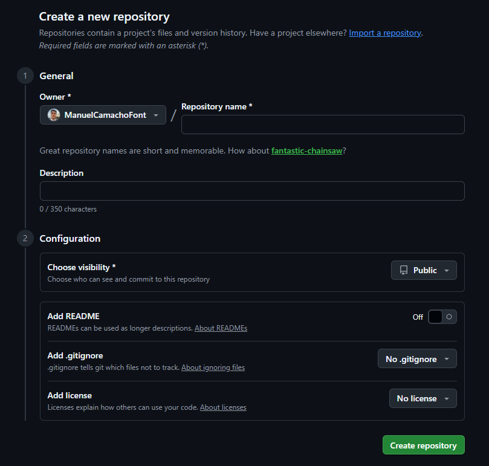

Crear Repositorio en Git
Una vez que estés en tu cuenta de GitHub, busca en la esquina superior derecha el icono "+" junto a tu foto de perfil. Al hacer clic, selecciona "New repository". Haz clic en el botón verde "Create repository" al final de la página. ¡Listo! Ya tienes tu espacio en la nube. Ahora verás la página principal de tu repo, donde podrás subir archivos directamente arrastrándolos o usar la terminal.

Mis aficiones
Algo más